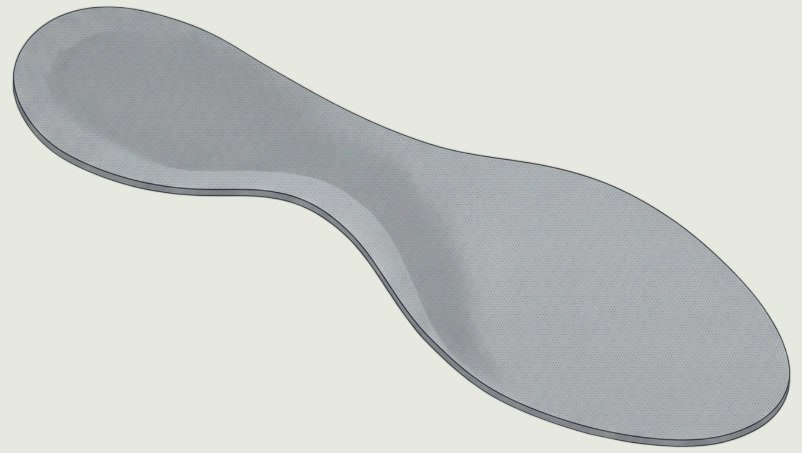

Product & service design / Project overview
ArchFlow
Exploring pressure sensing, adjustable air chambers and feedback for early-stage adult-acquired flatfoot.

From pressure input to physical response
ArchFlow explores a support system for early-stage adult-acquired flatfoot. Literature research, interviews and comparisons of existing products informed a concept connecting pressure sensing, adjustable air chambers, interface feedback and a supporting service.
What was built
An Arduino bench prototype demonstrates pressure input, threshold-based assessment and inflation or deflation of air chambers. The product form, interface and service flow are design proposals. The bench setup is distinct from an integrated wearable product.
What needs validation
The work does not establish medical efficacy, rehabilitation outcomes, measurement accuracy or long-term comfort. Further work would require calibration checks, longer wear studies and professional review of thresholds and referral decisions.
 View larger
View larger